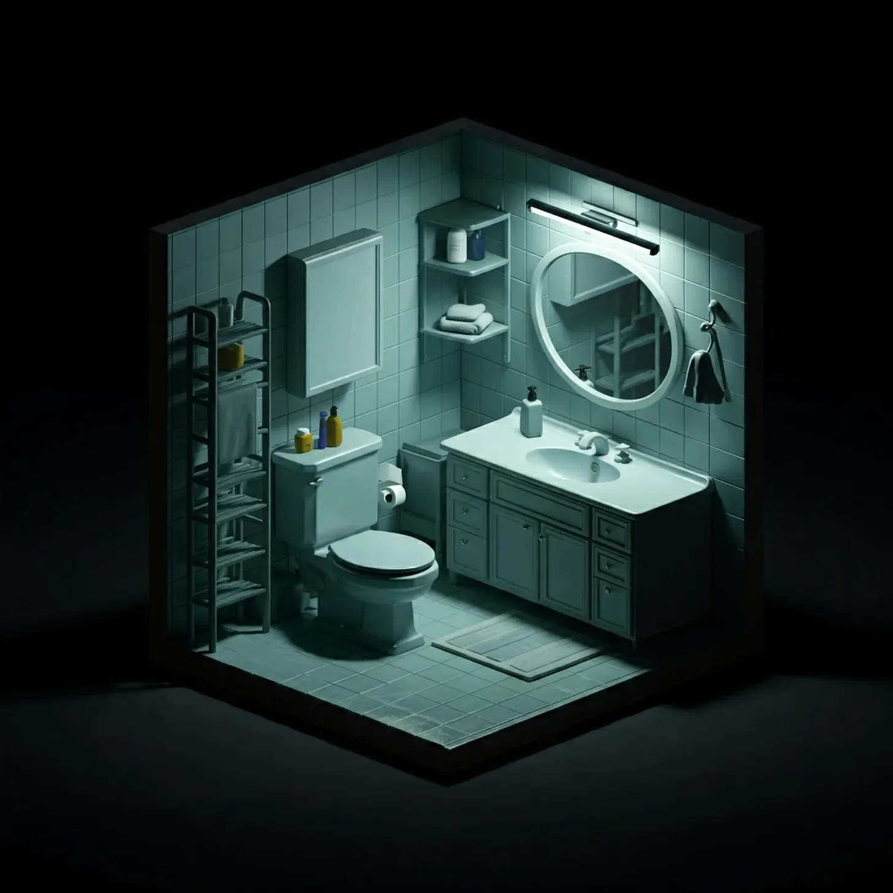

사라는 항상 자신을 이성적인 사람이라고 생각해왔다. 그녀는 논리적인 사고방식과 실용적인 삶의 자세를 자랑스럽게 여겼다. 그렇기에, 처음 속삭임을 들었을 때, 그녀는 자신이 미쳐가고 있다고 확신했다.
[Sarah had always considered herself a rational person. She prided herself on her logical thinking and no-nonsense approach to life. That’s why, when she first heard the whispers, she was convinced she was losing her mind.]
그것은 다른 화요일 아침과 다를 바 없이 시작되었다. 사라는 졸린 눈으로 비틀거리며 욕실로 들어섰고, 출근 전 정신을 차리기 위해 샤워를 간절히 원했다. 칫솔을 집으려고 손을 뻗었을 때, 그녀는 그것을 들었다. 어디에서도, 그리고 동시에 모든 곳에서 들리는 듯한 희미하고 웅얼거리는 목소리였다.
[It started on a Tuesday morning, just like any other. Sarah stumbled into her bathroom, bleary-eyed and desperate for a shower to wake her up before work. As she reached for her toothbrush, she heard it—a faint, muffled voice that seemed to come from nowhere and everywhere at once.]
“쉿… 안녕, 잠꾸러기.”
[“Psst… hey there, sleepyhead.”]
사라는 심장이 쿵쾅거리며 휙 돌아섰다. 욕실은 텅 비어 있었다. 그녀는 그 목소리를 잠에 취한 두뇌 탓으로 돌리며 고개를 저었고, 아침 일과를 계속했다.
[Sarah whirled around, her heart racing. The bathroom was empty. She shook her head, attributing the voice to her sleep-addled brain, and went about her morning routine.]
하지만 그 일은 다음 날에도 다시 일어났다. 그 다음 날에도 마찬가지였다. 매일 아침, 그 목소리는 조금씩 더 선명해지고, 조금 더 집요해졌다. 사라는 이제 설명할 수 없는 현상으로 인해 더럽혀진 그녀의 성역인 욕실로의 여행이 두려워지기 시작했다.
[But it happened again the next day. And the day after that. Each morning, the voice grew a little clearer, a little more insistent. Sarah began to dread her trips to the bathroom, her sanctuary now tainted by this inexplicable phenomenon.]
어느 오후, 그녀는 커피를 마시며 절친한 친구 리사에게 털어놓았다. “내가 미쳐가는 것 같아.” 사라는 컵을 감싼 손이 떨리며 속삭였다. “계속 내 욕실에서 목소리가 들려.”
[She confided in her best friend, Lisa, over coffee one afternoon. “I think I’m going crazy,” Sarah whispered, her hands trembling around her mug. “I keep hearing voices in my bathroom.”]
리사의 눈이 걱정으로 커졌다. “상담사를 만나보는 건 어때? 스트레스 때문일 수도 있잖아.”
[Lisa’s eyes widened with concern. “Have you considered seeing a therapist? Maybe it’s stress-related.”]
사라는 고개를 끄덕였지만, 속으로는 이것이 전혀 다른 무언가라는 걸 알고 있었다. 그녀 자신조차도 설명할 수 없는 그 무언가.
[Sarah nodded, but deep down, she knew this was something else entirely. Something she couldn’t explain, even to herself.]
몇 주가 지나고, 사라는 그 목소리와 함께 살아가는 법을 배웠다. 매일 아침 인사를 건네면, 그녀는 점점 기이해지는 삶 속에서 어떻게든 정상의 모습을 유지하려는 듯 시큰둥한 대답을 했다.
[Weeks passed, and Sarah learned to live with the voice. She’d grunt noncommittal responses when it greeted her each morning, determined to maintain some semblance of normalcy in her increasingly bizarre life.]
그러던 어느 날, 모든 것이 바뀌었다.
[Then came the day when everything changed.]
사라는 눈물을 흘리며 욕실로 뛰어들었다. 할머니가 돌아가셨다는 소식을 막 들었고, 슬픔이 그녀를 압도했다. 그녀가 욕조 가장자리에 앉아 흐느끼고 있을 때, 그 목소리가 다시 들렸다. 하지만 이번에는 달랐다.
[Sarah burst into the bathroom, tears streaming down her face. She’d just received news that her grandmother had passed away, and the grief overwhelmed her. As she sat on the edge of the bathtub, sobbing, the voice spoke again—but this time, it was different.]
“사라, 삼가 고인의 명복을 빕니다.” 그 목소리는 부드럽고 공감 어린 톤으로 말했다.
[“I’m so sorry for your loss, Sarah,” it said, its tone gentle and empathetic.]
사라는 흐느낌을 멈추고 얼어붙었다. “어… 어떻게 내 이름을 알아요?” 그녀가 속삭였다.
[Sarah froze, her sobs catching in her throat. “How… how do you know my name?” she whispered.]
“난 당신을 꽤 오랫동안 알고 있었어요.” 그 목소리가 대답했다. “당신의 최고의 순간과 최악의 순간을 모두 봤죠. 난 여기서 당신과 진정으로 대화할 수 있는 적절한 순간을 기다리고 있었어요.”
[“I’ve known you for a while now,” the voice replied. “I’ve seen you at your best and your worst. I’ve been here, waiting for the right moment to truly speak with you.”]
호기심이 두려움을 압도했고, 사라는 이 신비한 목소리와 대화를 나누게 되었다. 그들은 몇 시간 동안 이야기를 나눴다. 할머니에 대해, 그녀의 어린 시절에 대해, 그녀의 꿈과 두려움에 대해. 그 목소리는 경청하고, 위로를 건네고, 심지어 놀랍도록 재치 있는 관찰로 그녀를 웃게 만들기도 했다.
[Curiosity overtook fear, and Sarah found herself engaging in conversation with the mysterious voice. They talked for hours—about her grandmother, her childhood, her dreams and fears. The voice listened, offered comfort, and even made her laugh with surprisingly witty observations.]
몇 주가 지나면서, 사라는 욕실 방문을 기대하게 되었다. 그 목소리는 그녀의 심복이자 조언자가 되었고, 이상하게도 그녀의 친구가 되었다. 그 목소리는 그녀가 전에는 전혀 고려해보지 않았던 삶에 대한 통찰력을 제공하며, 신비한 지혜를 가진 것처럼 보였다.
[As the weeks went by, Sarah found herself looking forward to her bathroom visits. The voice became her confidant, her advisor, and, strangely enough, her friend. It seemed to possess an uncanny wisdom, offering insights into her life that she’d never considered before.]
사라의 삶은 변화하기 시작했다. 그녀는 항상 두려워했던 위험을 감수하고, 이전에는 무시했던 기회를 추구했다. 그녀의 친구들은 그 차이를 알아챘고, 새로 생긴 자신감과 삶에 대한 열정에 대해 언급했다.
[Sarah’s life began to change. She took risks she’d always been afraid to take, pursued opportunities she’d previously dismissed. Her friends noticed the difference, commenting on her newfound confidence and zest for life.]
“요즘 훨씬 더 행복해 보여.” 리사가 어느 날 말했다. “무슨 비결이야?”
[“You seem so much happier lately,” Lisa remarked one day. “What’s your secret?”]
사라는 그저 신비롭게 미소 지었다. 어떻게 욕실에서 들리는 유령의 목소리와의 대화로 인해 그녀의 삶이 변화되었다고 설명할 수 있겠는가?
[Sarah just smiled mysteriously. How could she explain that her life had been transformed by conversations with a disembodied voice in her bathroom?]
몇 달이 지나고, 사라와 그 목소리의 유대감은 더욱 깊어졌다. 그녀는 그 목소리의 조언과 우정에 의지하게 되었다. 하지만 그녀의 삶이 나아지면서, 한 가지 궁금증이 계속 남아 있었다. 그녀가 대화하고 있는 것이 정확히 무엇일까?
[Months passed, and Sarah’s bond with the voice grew stronger. She’d come to rely on its advice and companionship. But as her life improved, a nagging question persisted: What exactly was she talking to?]
마침내, 그들의 첫 진지한 대화 기념일에, 사라는 용기를 내어 물었다. “당신은… 대체 누구시죠… 아니 무엇이죠?”
[Finally, on the anniversary of their first real conversation, Sarah gathered her courage and asked, “Who… or what… are you?”]
그 목소리는 웃음을 터뜨렸고, 그 소리는 작은 욕실에 울려 퍼지는 것 같았다. “아, 사라.” 그 목소리가 즐거움이 분명한 어조로 말했다. “네가 절대 물어보지 않을 줄 알았는데.”
[The voice chuckled, a sound that seemed to reverberate through the small bathroom. “Oh, Sarah,” it said, amusement evident in its tone. “I thought you’d never ask.”]
사라는 숨을 멈추고, 그 계시를 기다리며 심장이 쿵쾅거렸다.
[Sarah held her breath, her heart pounding as she waited for the revelation.]
“아래를 봐.” 그 목소리가 부드럽게 지시했다.
[“Look down,” the voice instructed gently.]
천천히, 사라는 시선을 낮추었고, 그녀의 눈은 타일 바닥을 가로질러 그 방에서 가장 평범한 물건에 도착했다. 변기였다.
[Slowly, Sarah lowered her gaze, her eyes traveling across the tiled floor until they landed on the most ordinary object in the room—the toilet.]
“말도 안 돼.” 그녀는 믿을 수 없다는 듯한 목소리로 속삭였다.
[“No way,” she breathed, disbelief coloring her voice.]
변기는 어깨를 으쓱하는 듯한 불가능한 움직임을 보였고, 사라는 다시 한번 자신의 정신 상태를 의심했다. “나는 스스로를 자기 오라클이라고 생각하는 걸 선호해.” 그것이 목소리에 약간의 자부심을 담아 말했다. “하지만 맞아, 나는 너의 말하는 변기야. 그리고 말해야겠는데, 함께 네 문제들을 씻어내는 게 즐거웠어.”
[The toilet seemed to shrug, an impossible movement that made Sarah question her sanity once again. “I prefer to think of myself as the Porcelain Oracle,” it said, a hint of pride in its voice. “But yes, I’m your talking toilet. And I must say, it’s been a pleasure flushing out your problems together.”]
사라는 입을 벌린 채 그녀의 변기, 그녀의 친구, 그녀의 심복, 그녀의 의외의 인생 코치를 응시했다. 그리고는, 이 모든 것의 부조리함에도 불구하고, 그녀는 웃기 시작했다. 그것은 킥킥거림으로 시작해 욕실 벽에 울려 퍼지는 배꼽 잡는 웃음으로 커졌다.
[Sarah stared, open-mouthed, at her toilet—her friend, her confidant, her unlikely life coach. And then, despite the absurdity of it all, she began to laugh. It started as a giggle and grew into a full-bellied roar that echoed off the bathroom walls.]
웃음이 가라앉자, 사라는 눈에서 눈물을 닦아내며 놀라움에 고개를 저었다. “글쎄,” 그녀가 여전히 킥킥거리며 말했다. “이건 ‘화장실 유머'에 완전히 새로운 의미를 부여하는 것 같네.”
[As her laughter subsided, Sarah wiped tears from her eyes and shook her head in wonder. “Well,” she said, still chuckling, “I guess this gives a whole new meaning to 'toilet humor.’”]
자기 오라클의 웃음소리가 그녀의 웃음에 합세했고, 그 순간, 사라는 그녀의 삶이 결코 예전과 같지 않을 것임을 알았다. 하지만 어쩐지, 그녀는 그것이 괜찮았다.
[The Porcelain Oracle’s laughter joined hers, and in that moment, Sarah knew that her life would never be the same again. But somehow, she was okay with that.]